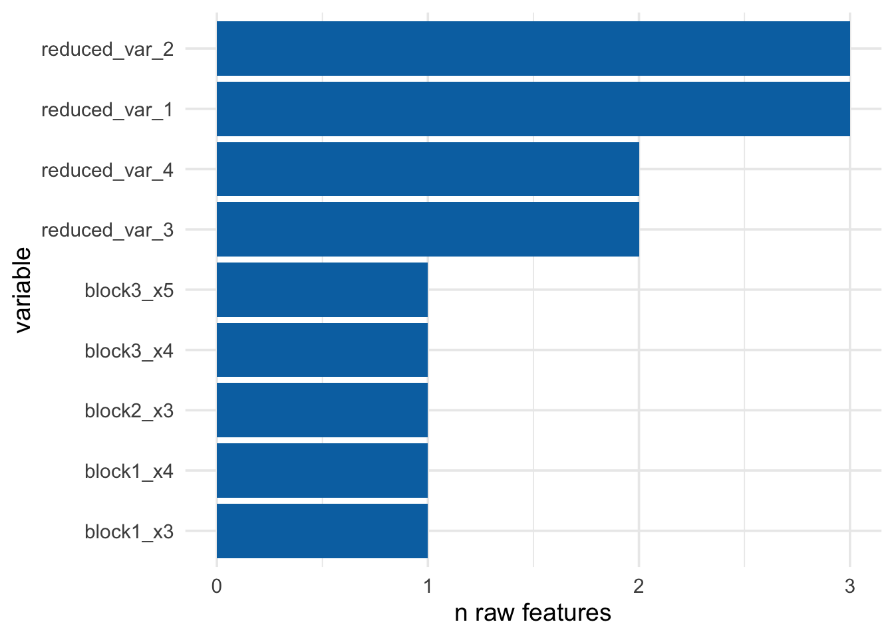
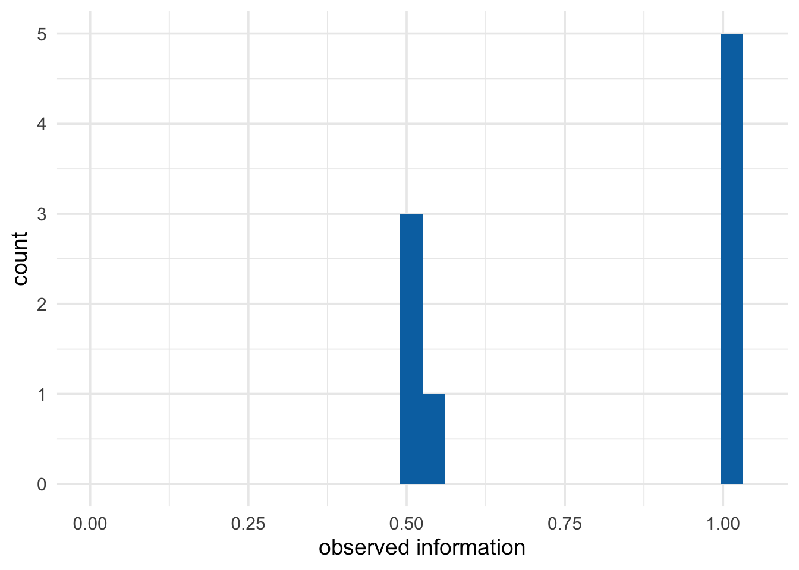
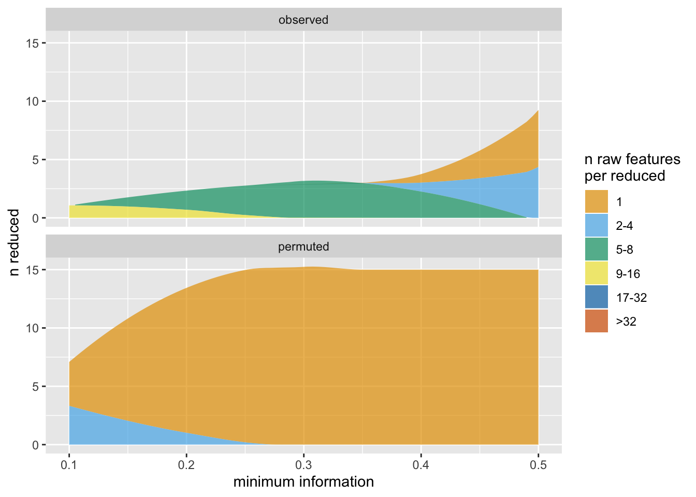
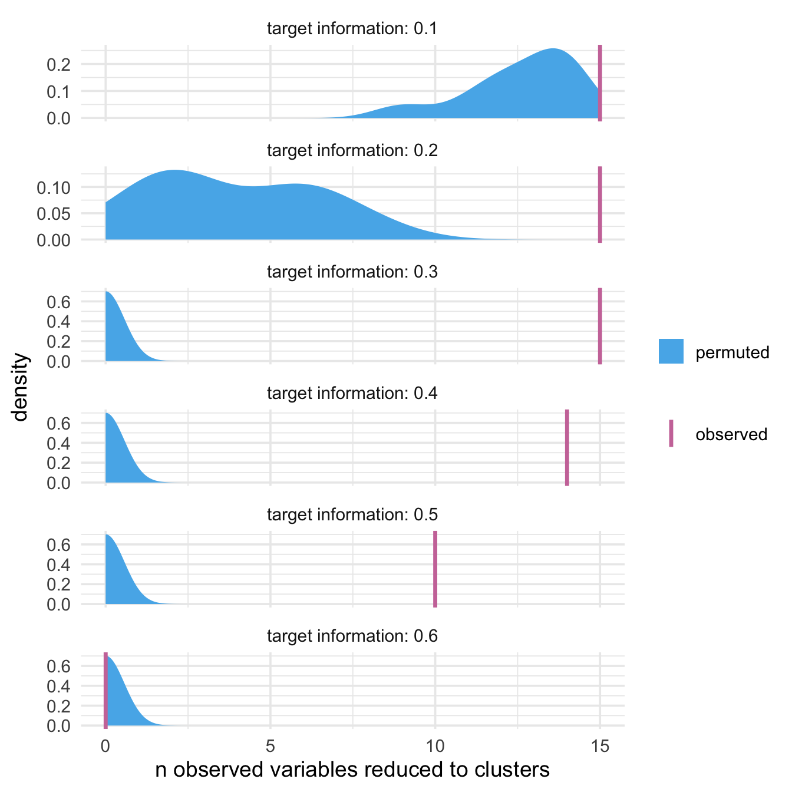

vignettes/introduction-to-partition.Rmd
introduction-to-partition.Rmdpartition is a fast and flexible data reduction framework that uses an approach called Direct-Measure-Reduce to create agglomerative partitions that maintain the user-specified minimum level of information. Each variable starts of as its own cluster; potential reduced variables are assessed by making sure this level of information is maintained. The reduced variables are also interpretable: original variables map to one and only one variable in the reduced data set. partition is flexible, as well: how variables are selected to reduce, how information loss is measured, and the way data is reduced can all be customized.
partition is particularly useful for highly correlated data, such as genetic data, where there is a lot of redundancy in the information each variable lends. simulate_block_data() simulates data like this: blocks of correlated data that are themselves independent of the other blocks in the data:
library(partition)
library(ggplot2)
set.seed(1234)
# create a 100 x 15 data set with 3 blocks
df <- simulate_block_data(
# create 3 correlated blocks of 5 variables each
block_sizes = rep(5, 3),
lower_corr = .4,
upper_corr = .6,
n = 100
)
df
#> # A tibble: 100 x 15
#> block1_x1 block1_x2 block1_x3 block1_x4 block1_x5 block2_x1 block2_x2
#> <dbl> <dbl> <dbl> <dbl> <dbl> <dbl> <dbl>
#> 1 -0.306 -0.187 -1.82 -0.533 -0.547 1.71 -0.642
#> 2 -1.40 -0.179 -1.79 -1.01 -0.839 -0.0401 0.770
#> 3 1.35 1.27 0.938 1.54 1.38 -0.0359 0.278
#> 4 0.941 0.786 0.587 -0.0181 0.0350 -0.172 -0.106
#> 5 0.917 0.294 0.357 -0.711 -1.08 -0.674 -0.0997
#> 6 -0.573 0.159 -0.870 -1.14 -0.272 0.331 -0.583
#> 7 -0.157 1.62 0.876 -0.0377 0.179 0.278 -0.839
#> 8 -0.0469 -1.11 -0.359 0.132 -2.07 -0.809 1.33
#> 9 -0.375 -0.354 0.562 -1.14 -0.131 -1.53 -1.87
#> 10 -0.680 0.560 -0.687 0.290 -0.672 -0.580 0.0525
#> # … with 90 more rows, and 8 more variables: block2_x3 <dbl>,
#> # block2_x4 <dbl>, block2_x5 <dbl>, block3_x1 <dbl>, block3_x2 <dbl>,
#> # block3_x3 <dbl>, block3_x4 <dbl>, block3_x5 <dbl>partition takes a data frame and a threshold–the minimum amount of information a reduced variable must explain to be created–and reduces the data to as few variables as possible. The threshold prevents information loss: each reduced variable must still explain at least that much.
prt <- partition(df, threshold = .5)
prt
#> Partitioner:
#> Director: Minimum Distance (Pearson)
#> Metric: Intraclass Correlation
#> Reducer: Scaled Mean
#>
#> Reduced Variables:
#> 4 reduced variables created from 10 observed variables
#>
#> Mappings:
#> reduced_var_1 = {block3_x1, block3_x2, block3_x3}
#> reduced_var_2 = {block1_x1, block1_x2, block1_x5}
#> reduced_var_3 = {block2_x2, block2_x5}
#> reduced_var_4 = {block2_x1, block2_x4}
#>
#> Minimum information:
#> 0.501partition creates a tibble with the newly reduced variables:
partition_scores(prt)
#> # A tibble: 100 x 9
#> block1_x3 block1_x4 block2_x3 block3_x4 block3_x5 reduced_var_1
#> <dbl> <dbl> <dbl> <dbl> <dbl> <dbl>
#> 1 -1.82 -0.533 0.665 0.884 0.245 0.869
#> 2 -1.79 -1.01 0.468 1.96 0.463 -0.460
#> 3 0.938 1.54 -0.142 0.0903 -1.64 -0.357
#> 4 0.587 -0.0181 -0.824 -1.34 -1.20 -2.07
#> 5 0.357 -0.711 0.230 0.874 -1.70 0.205
#> 6 -0.870 -1.14 -1.24 -0.289 -0.406 0.0871
#> 7 0.876 -0.0377 -1.27 -2.50 -1.53 -2.96
#> 8 -0.359 0.132 0.0977 0.109 -0.152 -0.828
#> 9 0.562 -1.14 -1.01 0.953 -1.28 0.745
#> 10 -0.687 0.290 0.605 -1.91 -1.07 -0.645
#> # … with 90 more rows, and 3 more variables: reduced_var_2 <dbl>,
#> # reduced_var_3 <dbl>, reduced_var_4 <dbl>Each variable in the original data set maps to one reduced variable; in this partition, there are four reduced variables consisting of two to three variables each, as well as five of the original variables that did not get reduced because too much information would have been lost.
plot_ncluster(prt) +
# plot_*() functions return ggplots, so they can be extended using ggplot2
theme_minimal(14)
Each reduced variable explains at least 50% of the information of the original variables from which it was created. The distribution of information has a lower limit of our threshold, .5.

A key for these mappings and the information each variable explains can be retrieved with mapping_key(), which returns a nested tibble.
mapping_key(prt)
#> # A tibble: 9 x 4
#> variable mapping information indices
#> <chr> <list> <dbl> <list>
#> 1 block1_x3 <chr [1]> 1 <int [1]>
#> 2 block1_x4 <chr [1]> 1 <int [1]>
#> 3 block2_x3 <chr [1]> 1 <int [1]>
#> 4 block3_x4 <chr [1]> 1 <int [1]>
#> 5 block3_x5 <chr [1]> 1 <int [1]>
#> 6 reduced_var_1 <chr [3]> 0.520 <int [3]>
#> 7 reduced_var_2 <chr [3]> 0.501 <int [3]>
#> 8 reduced_var_3 <chr [2]> 0.534 <int [2]>
#> 9 reduced_var_4 <chr [2]> 0.514 <int [2]>To see each individual mapping, you can unnest them using unnest_mappings() (or do it yourself with tidyr::unnest())
unnest_mappings(prt)
#> # A tibble: 15 x 4
#> variable information mapping indices
#> <chr> <dbl> <chr> <int>
#> 1 block1_x3 1 block1_x3 3
#> 2 block1_x4 1 block1_x4 4
#> 3 block2_x3 1 block2_x3 8
#> 4 block3_x4 1 block3_x4 14
#> 5 block3_x5 1 block3_x5 15
#> 6 reduced_var_1 0.520 block3_x1 11
#> 7 reduced_var_1 0.520 block3_x2 12
#> 8 reduced_var_1 0.520 block3_x3 13
#> 9 reduced_var_2 0.501 block1_x1 1
#> 10 reduced_var_2 0.501 block1_x2 2
#> 11 reduced_var_2 0.501 block1_x5 5
#> 12 reduced_var_3 0.534 block2_x2 7
#> 13 reduced_var_3 0.534 block2_x5 10
#> 14 reduced_var_4 0.514 block2_x1 6
#> 15 reduced_var_4 0.514 block2_x4 9Partitioners are functions that tell the partition algorithm 1) what to try to reduce 2) how to measure how much information is lost from the reduction and 3) how to reduce the data. We call this approach Direct-Measure-Reduce. In partition, functions that handle 1) are thus called directors, functions that handle 2) are called metrics, and functions that handle 3) are called reducers. partition has a number of pre-specified partitioners for agglomerative data reduction, but this approach is also quite flexible. See the vignette on extending partition to learn more about custom partitioners.
The default partitioner in partition() is part_icc(). part_icc() uses a correlation-based distance matrix to find the pair of variables with the smallest distance between them, intraclass correlation (ICC) to measure information explained by the reduced variable, and scaled row means to reduce variables with a sufficient minimum ICC. part_icc() is generally fast and scalable.
part_icc()
#> Director: Minimum Distance (Pearson)
#> Metric: Intraclass Correlation
#> Reducer: Scaled MeanThere are several other partitioners, which all have names in the format part_*()
| partitioner | direct | measure | reduce |
|---|---|---|---|
part_icc() |
Minimum Distance | ICC | scaled row means |
part_kmeans() |
K-Means Clusters | Minimum ICC | scaled row means |
part_minr2() |
Minimum Distance | Minimum R-Squared | scaled row means |
part_pc1() |
Minimum Distance | Variance Explained (PCA) | first principal component |
part_icc() |
Minimum Distance | Standardized Mutual Information | scaled row means |
To apply a different partitioner, use the partitioner argument in partition().
prt_kmeans <- partition(df, threshold = .5, partitioner = part_kmeans())
prt_kmeans
#> Partitioner:
#> Director: K-Means Clusters
#> Metric: Minimum Intraclass Correlation
#> Reducer: Scaled Mean
#>
#> Reduced Variables:
#> 4 reduced variables created from 8 observed variables
#>
#> Mappings:
#> reduced_var_1 = {block2_x1, block2_x4}
#> reduced_var_2 = {block1_x1, block1_x4}
#> reduced_var_3 = {block2_x2, block2_x5}
#> reduced_var_4 = {block3_x3, block3_x5}
#>
#> Minimum information:
#> 0.514Data sets with variables that are independent tend to reduce only at lower thresholds because too much information is lost. In this set of 10 independent variables, setting the threshold to .5 results in a partition with no reduction. The original data is returned.
# create a data.frame of 10 independent variables
ind_df <- purrr::map_dfc(1:10, ~rnorm(30))
ind_part <- partition(ind_df, .5)
ind_part
#> Partitioner:
#> Director: Minimum Distance (Pearson)
#> Metric: Intraclass Correlation
#> Reducer: Scaled Mean
#>
#> Reduced Variables:
#> 0 reduced variables created from 0 observed variables
identical(ind_df, partition_scores(ind_part))
#> [1] TRUEBecause we can expect this, comparing partitions we fit on our data to partitions fit on independent data helps assess the reasonableness of our clusters. One easy way to compare how much data is reduced compared to if the data were completely independent is to use plot_stacked_area_clusters(), which creates partitions for a series of thresholds using both the observed data and a permuted (independent) version of the data. In general, there are many more raw features per reduced variable for the real data than the independent data; it takes a very low threshold for the permuted data to start forming clusters.

partition also has a set of tools for more extensive permutation tests. map_partition() will fit partitions for a range of thresholds for the observed data; test_permutation() will do the same but also fit partitions for a set of permuted data sets (100 by default). plot_permutation() visualizes the results, comparing information, number of clusters, or number of raw features that were reduced.
perms <- test_permutation(df, nperm = 10)
perms
#> # A tibble: 6 x 9
#> target_info observed_info nclusters nreduced partition perm_observed_i…
#> <dbl> <dbl> <int> <int> <list> <dbl>
#> 1 0.1 0.119 1 15 <S3: par… 0.106
#> 2 0.2 0.218 2 15 <S3: par… 0.300
#> 3 0.3 0.395 3 15 <S3: par… 1
#> 4 0.4 0.426 3 14 <S3: par… 1
#> 5 0.5 0.501 4 10 <S3: par… 1
#> 6 0.6 1 0 0 <S3: par… 1
#> # … with 3 more variables: perm_nclusters <dbl>, perm_nreduced <dbl>,
#> # permutation <list>
plot_ncluster() and plot_information(), in addition to plotting individual partitions, also plot the results of test_permutation().